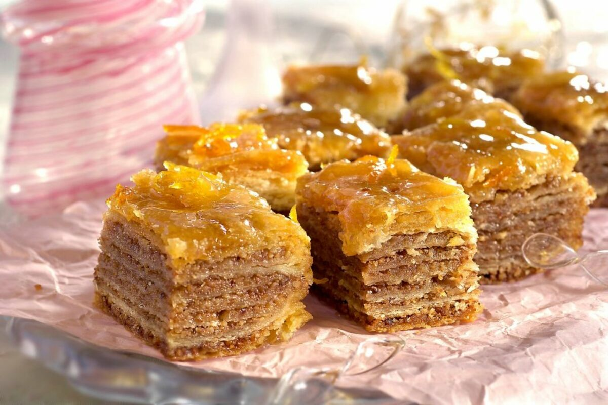

Potrebno je:
U šerpu sipajte 1 l vode, dodajte 1 kg šećera i uključite ringlu na najjače da provri. Kada provri sklonite sa ringle i ostavite da se hladi.
Izrendajte čokoladu za kuvanje, dodajte mlevene orahe, suvo grožđe i sve to promešajte kašikom.
Uzmite jednu koru, presavijte je na pola, tako da krajevi budu prema vama i uz ivicu poređajte fil ( širine 3 cm).
Uvijte u rolnicu i stavite u pleh.
Kada poređate sve rolnice, isecite ih tako da veličina rolnice bude 10ak cm.
Rastopite margarin pa time prelijte baklavice svuda ravnomerno.
Pecite ih u rerni koja je prethodno zagrejana na 220 stepeni 15 minuta.
Kada su baklavice pečene, izvadite ih iz rerne i tako vruće ih prelijte ohlađenim sirupom.
U sirup možete dodati i rendanu koru jednog limuna).